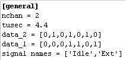

september 2007
JALsPy Devices Overview
7 Segment Display
|
|
A 7-Segment LED display, with upto 8 digits and extra LEDs on top. The top LEDs can be divided into 2 groups as shown in the figure on the left. This is "Super Virtual" component and the component is created by including the JAL library Segment_7_Display. In software the digits are controled by the array segment [ 0 .. 7 ]. In hardware the digits are controled by Virt_Segment [0..7], where Virt_Segment [0] are the extra LEDs, Virt_Segment [1] is the left most digit and so on. Connections between the software and the hardware are defined in the properties of this device. |
HD44780 LCD Controler
|
Implements the standard HD44780 and HD44780_animated libraries. Supports one line scrolling, user defined characters, full cursor and blink support and animated characters. The hardware LCD_shift_left and LCD_shift_right are not implemented, because they are considered useless. |
Data EEprom
|
datafile: <main_jal>.eeprom |
Implements the library "pic_data_eeprom.jal" (Version: 6 / 05-02-2007) as a virtual library, and uses a file as a permanent data storage. |
Signal File
|
 |
Implements a (real) signal generator. You can specify the number of channels, the names of the channels and sample period, through a simple inifile. The sample period can either be clocked by the PIC-clock, the Virtual-Clock or Real-time. The graphical representation displays the signal values, the signal names and the duty cycle. So even without the Scope module you verify accurate timing. |
Graphical LCD
|
This is a virtual device that implements a Grapical LCD, with a T6963c controller. |
PushButton + (pwm) LED
|
|
This is a virtual device, consisting of a LED, a Switch and 2 resistors. With the JAL - library you can control the intensity of the LED though a PWM-modulation, and still read the switch. The library can momentarily controls 9 of these LED-Switch combinations. The total length of the arc indicates the duty cycle of the PWM. If the button is pressed, it will get a thick border in the active color. The disadvantage of this circuit is that if the LED is turned of by software, pressing the Switch will light the LED. And depending on the color of the LED, the intensity will vary, especially with high efficiency LEDs (Red will light quit a lot, Blue only dimmed, or is this a software error ?). |
Robot1
|
|
This is simple robot, with two motors, one on the left wheel and one on the right wheel. Both motors are placed in the center, so running one motor forwards and the other motor backwards, will perform a perfect circle. The robot also has 2 whiskers, which act as sensors if they are touched by another shape or the environment borders. This robot can not exit the environment. |
Shapes
|
Shapes is collection of shapes, to create environments for robots. If the shape is On, the shape is fixed and can't be moved by a robot, if the shape is Off, the shape can be moved by a robot. |
LED
Push Button
RS232 Terminal
|
This device is standard build in JALsPy. |
Resistor
|
The resistor can be emulated in analog / digital and virtual mode. The value of the resistor is visualized in a 3-band color code. |